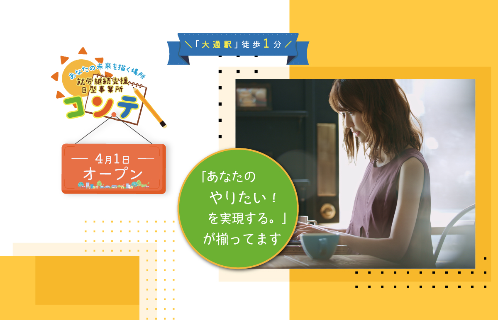
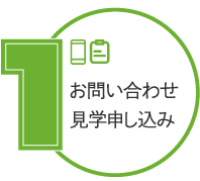
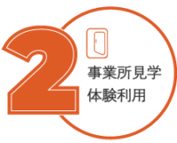
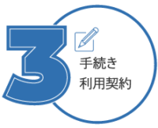

『PCスキル』×『優しさ』×『サポート』
＼調和のとれた居場所／
動画作成・写真編集・アプリ作成
誰もが初めてのおしごと
パソコンの基礎から、
あなたをサポートするスタッフが
寄り添います
＼希望するおしごと探しましょう／
＼コンテのポイント／
1
スキルや体調に
あったおしごと
2
工賃1日
1,075円～
3
美味しい昼食サービス
(100円で提供)
4
就職に向けた
サポート
5
ドリンクバー(無料)
6
楽しく、
まじめにおしごと
対象者・利用までの流れ

見学を設定することも可能です。
お電話又はメールにてお問い合わせ、もしくは見学申し込みを行ってください。

事業所を見学し、雰囲気やカリキュラムなどを確認してください。
体験は２日間程度を設定しております。

お住まいの市区町村にて、サービス受給者証の申請手続きを行います。。
その後、利用契約となります。。
地図とアクセス
未経験者でも安心！ 精神・発達・知的・身体・難病の方、あなたに最適な訓練・業務内容を体調に合わせてご提供！
事業所番号:0110104080
事業名:就労継続支援B型 コンテ
電話番号:011-522-8860
メールアドレス:sapporo.conte@gmail.com
住所:〒060-0061 札幌市中央区南1条西5丁目16
プレジデント松井ビル100 1201号
アクセス:地下鉄大通駅徒歩１分
市電西４丁目徒歩１分